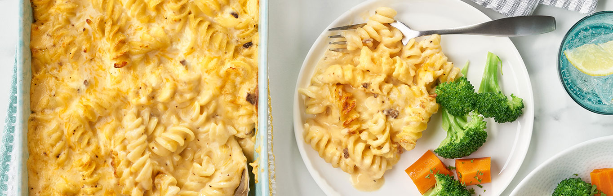

3 Cheese Pasta Bake

Description
Why was condensed cream of mushroom soup invented? So home cooks wouldn't have to make a cream sauce from scratch for recipes like this 3-Cheese Pasta Bake!
The butter, the flour, the time spent stirring hunched over the stove, it's all obsolete thanks to this creamy soup that melts with three types of cheese for a
mac and cheese that tastes amazing but bakes up in 20 minutes! Cook the rotini while the oven is heating, stir in the soup, milk and cheeses and bake- that's
it! 3-Cheese Pasta Bake is so easy to make, and you can even customize it using whatever pasta shape and shredded cheese you have on hand!
Ingredients
8 ounces (about 2 1/2 cups) uncooked rotini (spiral) pasta
can (10.5 ounces) Campbell’s® Condensed Cream of Mushroom Soup or Cheddar Cheese Soup or 25% Less Sodium Cream of Mushroom Soup
2 cups shredded two-cheese blend (about 8 ounces)
1/3 cup grated Parmesan cheese
1 cup reduced fat (2%) milk
Steps
Step 1
Cook and drain the rotini according to the package directions. While the rotini is cooking, heat the oven to 400°F.
Step 2
Stir the soup, cheeses and milk in a 1 1/2-quart casserole. Stir in the cooked rotini. Season with salt and pepper.
Step 3
Bake for 20 minutes or until hot.